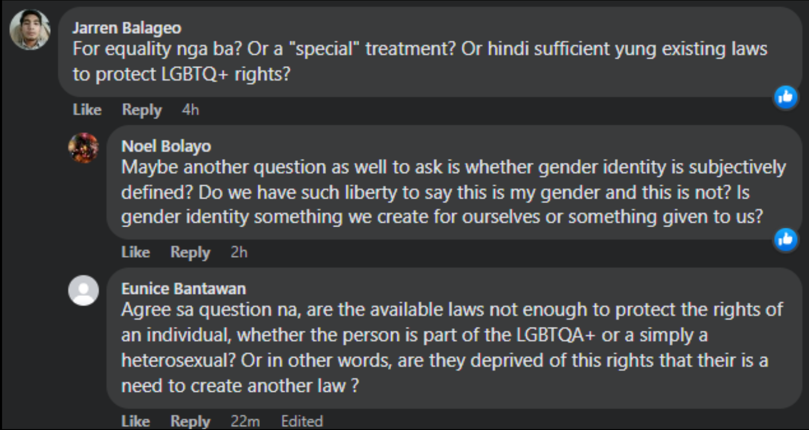
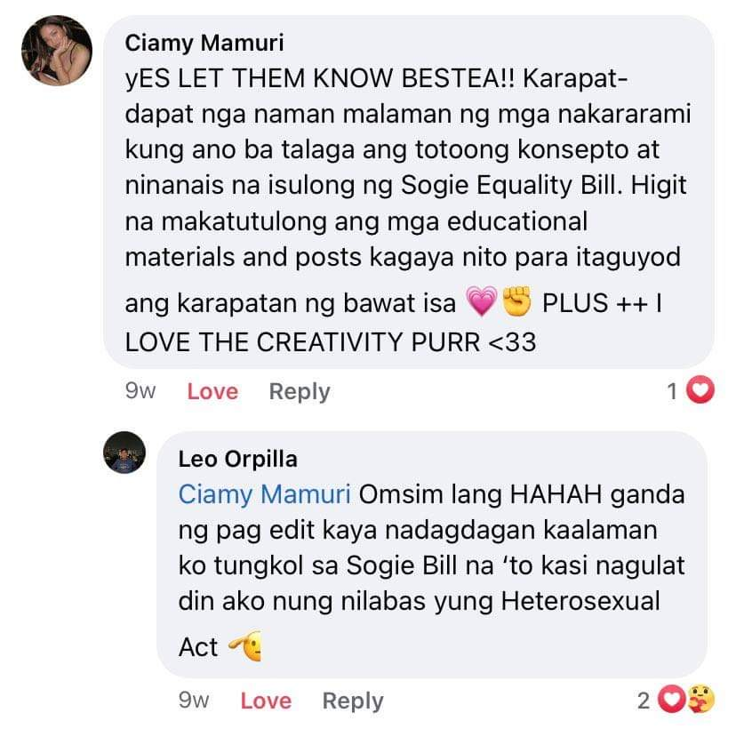
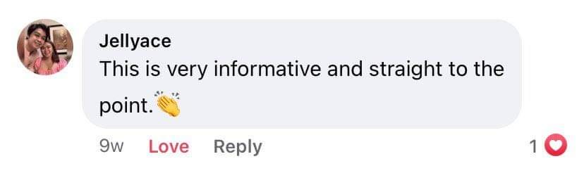

The SOGIE Equality Bill is one of the most controversial, hated, and misunderstood bills filed in the Philippines. When it first went viral, several religious and/or heterosexual people questioned its necessity and explicitly opposed the passage of the bill. It made very slow progress over the years, and only on December 6, 2022, was it approved at the Senate Committee level. Our group pondered and deliberated for a long time before finally choosing this cause to advocate for. We knew it wouldn’t be easy to encourage others to declare their support for it, nor would it be easy to convince and convert those who oppose the bill through a single Facebook post, but we still did it for the sake of truly forwarding a cause that is very much needed in our country.
On November 11, 2022, a month before the bill was approved on the Senate Committee level, we published our first advocacy post. Having garnered a total of 257 reactions, 58 shares, 45 comments, and 28 replies from six different posts, the initial advocacy post on the SOGIE Equality Bill was so-so. It was not a failure, but it was not a complete success either. To both appreciate and critique it, it is important to know the thought process behind it.
We first thought about what advocacy is and its purpose. Technically, to advocate means to publicly support or recommend something, but what exactly makes an advocacy post a good one? We figured that a good advocacy post must encourage others to declare their support for the matter or encourage them to share their insights, whether they are for or against the cause. With this, it could be said that the initial advocacy post was good. However, very good and successful advocacy often leads to realizations and movements. These were not exactly achieved by the post—why?
Examining the caption of the post, it could be observed that an informal register was used in the caption through colloquial words and terminologies. This approach was hypothesized and later proven to be attractive to Generation Zs or Gen Zs, which encouraged some of them to engage in the post and publicly show their support. However, two members of the group specifically asked to modify their captions as most of their Facebook friends are Millennials, Gen X, or Baby Boomers, who would appreciate a more formal register through simple words.
For the accompanying graphics, the group chose to make a comic strip featuring a dialogue between two characters to deliver important information about the bill. The group hypothesized that this was a better approach than an infographic, as it would catch the audience's attention. Some engagements/comments commended this approach as it made it easier for them to understand, but then again, these comments came from Gen Zs.


Although we received favorable responses and encouraged several people to publicly support the cause, the advocacy post could be more inclusive and understandable for all generations.
Applying Discourse and Rhetoric Concepts
Putting our advocacy post in context, the SOGIE Equality Bill made headlines the first time it was filed in the Senate in 2016, as stated earlier, and is still in interpellation. The current Senate president of the Philippines, Tito Sotto, along with other senators such as the famous boxing champion of the Philippines, Manny Pacquiao, expressed dissent against the bill. Sotto said that he will not pass the bill as long as he is the current Senate president. There were also protests against the bill by various religious groups during this time, calling the bill an “abomination” and saying that homosexuality is a sin as stated by their religion.
This made its way to the public as various discriminatory acts against the LGBTQIA+ were happening during the time that this bill was under questioning. Most notably, the one that happened to the trans-woman Gretchen Diez, where they were arrested just for using the women’s restroom, sparked public interest in the bill. This made its way to the mass media as the public downplayed the bill as a matter of toilets for the other gender on social media. This made it hard for the bill to be passed as many deemed it unnecessary, even by those who are LGBTQIA+ themselves. Due to this warped perception of the bill, our group decided to push for an advocacy campaign to correct the wrong information on the bill.
To push our advocacy, the group turns to making separate posts on Facebook to use the power of social media to give the masses more information to base their own opinions on the bill. The group decided to make separate posts on our own personal profiles, as we acknowledge that we associate with crowds of different kinds of characters from different kinds of backgrounds, religions, and cultures. This ensures that our advocacy reaches a wider variety of audiences on a personal level. With this, we hope to eradicate the myths associated with the bill and make the public aware of what the bill truly is.
With the vast diversity of people found on Facebook, the art of persuasion is especially needed when pushing for a certain cause. For the topic the group has chosen, it is imperative that the approach be done in a way that does not offend anyone, despite the differences in opinions. For the advocacy to gain traction, the group expressed their intentions to spread awareness on the ongoing issue by calling out to the general public and presenting reasonable proof that the SOGIE Bill must be pushed through. The context of the advocacy was deliberative. Advocating for the SOGIE Bill is meant to motivate others to see reasons to push for the bill to become a law. Because the bill has been misunderstood for various reasons, such as offense to religious beliefs and the mention of anti-discrimination towards the LGBTQ+ community leading others to believe it is special rights for them, the group presented factual evidence of the discrimination faced by those who have different gender identities and expressions from the accustomed “male and female only” belief.
Due to the informal approach of the post, the reactions and comments garnered were mostly from those in the younger generations, mainly Gen Z. Since the form of publication material used was also in comic strip form, the delivery was observed to be quite effective for the younger audiences. The advocacy was posted with words that were comprehensible and not too roundabout, expressing the goal of the advocacy with clear intent. Examples were given to persuade the thoughts of those that may have other ideas and opinions regarding the issue, and through rhetoric, the group was also able to engage in discourse with audiences that had a word or two to say about the SOGIE Bill. Outside of the Facebook post, there have been some disagreements, notably from the older generations (Gen X and Baby Boomers), due to preconceived notions and religious beliefs. It was observed that although the post did not come off as derogatory or offensive, it would still stir up controversy with those who have opinions that differ from the goals of the advocacy. Hence, some changes in opinion were also observed after much coercion through emotional, ethical, and logical proofs. Persuasion through proper communication was done, especially with the older audiences, by speaking with conviction and respect.
Applying Identity, Culture and Representation
Collective identities are influenced by culture, ideologies, and belief systems. Facebook has an algorithm where the posts you see on your newsfeed are the posts you usually engage in, thus creating a space where collective identities connect. You will most likely not see posts that contradict your ideologies unless you engage with them too. Both the concept of collective identities and the existence of algorithms affected the outcome of our advocacy.
Since the advocacy was posted by six people with different identities and backgrounds, the people who saw the advocacy differ in various aspects too. The amount of reactions and the varying opinions commented were different for each post. Factors such as interests, beliefs, and activeness on social media affected the engagements. The group acknowledges the controversiality of advocating for the SOGIE Equality Bill, especially in a country where religion is predominant, making most ideologies conservative.
A notable comment on one of the members’ posts questioned the objectivity of the bill, stating that it might just be for “special treatment” and if other LGBTQ+ related laws are not sufficient enough for the SOGIE Equality Bill to push through. This comment sparked a discussion where one person agreed and another asked the question of whether gender identity is a choice or not. Given their questions, it can be inferred that there is an identity gap between the person who posted the advocacy and the three people who commented, taking into consideration dynamics of generation, interests, and ideologies. However, it did not ultimately lead to communication problems, and it can be argued that the approach of the advocacy was helpful in preventing them.
The group was extra careful to curate the approach to the advocacy, considering that identity gaps, dialectical interpenetrations, and intersectionality are present in every communication. It was created to be something that imbues genuine information, not a show of superiority and shame. We also acknowledge the unequal playing field between genders who are often subject to oppression and those who are not, thus the post, specifically the first picture, emphasized on the problem of gender discrimination.
As identity is linked with culture, we cannot set aside this aspect of advocacy as it targets a mass community collectively known to have minimal to major deviation from the so called ordinary. The advocacy catered to issues involving generalization, stereotyping, prejudice, discrimination, diversity, and a multicultural worldview, which resulted in gathering a range of audiences. The majority of the engagements came from Gen Z, with very few coming from the Millennials. This may have become a factor due to the group members’ personal followings or friends on their respective social media platforms.
GenZ
Millennials
The differences in the way they approach the advocacy plays a huge element on how they perceive it as well. This determined the effectiveness of the implemented advocacy from its audience impact and influence. The group attentively considered these components with the help of the standpoint of the cultural approaches. Firstly, it was more on a combination of all approaches that was in mind in the beginning of carrying out the advocacy. After seeing the interactions on the first phase from different accounts, the group transitioned more on showcasing it through an approach focusing critically. The whole construction of the advocacy circled on the connection of identity, culture, and representation since its objective marked on the people itself.
Integrating visual culture, representation reflects as well within the main initial post. At first glance, it displays "Gen Z posting." Thus, it indeed gives the impression that the targeted audience is the youth. The symbols, characters, and writing constructed are relevant and better understood by younger individuals as they can relate to the given contexts. This approach, however, may be a pushback to the others. The older ones may take the post as not something for them, not something to bother or read. It may also keep them from taking the post seriously and understanding its content. Still, nonetheless, the post was able to give its message in easy Filipino without the ‘"Gen Z writing” that anyone can read and understand. Consequently, as seen by the engagements, these implications resulted in reactors and commenters being mostly in the young age bracket. The post has been receptive to such individuals, as they have replied back in the comments with the same style of expression. This may also have added hesitations for older people to react or step in.
Visual perception is indeed significant and vital. The initial impression and look are important and essential in captivating the audience’s interest in a certain cause. Representation is everywhere. Hence, images and symbols are to be strategically used in this regard. They can be effective in reaching out and communicating to people as they create, construct, and even negotiate meanings.
Formulation of the New Advocacy Post
With these concepts in mind, we formulated a new advocacy post with two goals: (1) cater to all ages by using formal register through simple words; and (2) deliver support and information in a straightforward manner by reducing the amount of graphics and words.
Despite the changes in the structure of the post, there were barely any significant changes in the reaction or engagement of the audience. We even lost some reactions from the previous Gen Z audience, and we barely gathered new people from other generations. Still, some supporters remained and once again declared their support.
Conclusion
To conclude, we have realized that communication is indeed a powerful tool to (re)create, (re)construct, and (re)negotiate meanings, but at the end of the day, most people will only see what they want to see and believe what they want to believe, especially on a social media platform such as Facebook, where users can cherry-pick the content they want to be shown in their newsfeed. Who knew there might even be some people who unfriended or even blocked us just because we advocated for the SOGIE Equality Bill?
Today, rigid dogmas, homophobia, and the patriarchy continue to exist in our society. These three, now accompanied by rampant misinformation, are the main enemies of the SOGIE Equality Bill. Religion and homophobia continue to have our lawmakers and implementers in a chokehold, resulting in slow progress or even denial of progressive bills. Still, as the future of this country, it is only good to learn about the power of communication and not just hope but strive that someday this power can overcome those that stomp on the powerless.
Support is not something that we can gather overnight, and movements are usually the products of decade-long activism, not just a single social media post. Still, all fire starts with a spark— we should never stop advocating for the things we truly care about, even if we think our support only contributes a minuscule amount. At the end of the day, our group returns to its commitment to proper communication and vows to continue its support for the SOGIE Equality Bill and other causes for the betterment of the country.